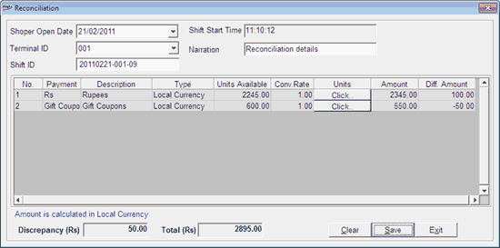

This option allows you to reconcile or in other words settle the balances or discrepancies in the total collections for each shift in a Till. You can perform reconciliation for the shifts that are closed.
How to reach: Cash > Till Management > Reconciliation
The Reconciliation window is displayed.

Shoper Open Date: Displays the current Shoper date.
Terminal ID: Select the terminal ID (node ID) of the Till, from the dropdown list.
Shift ID: Press F2 and select the required shift ID from the Browse window.
Shift Start Time: Displays the start time of the selected shift ID.
Narration: Enter appropriate narration regarding the activity.
Reconciliation Grid
By default, the details of the cash payment mode, as catalogued in Shoper 9, are displayed in the grid. The remaining payment modes catalogued in Shoper 9 will be available in the grid, if configured in the Shoper template.
The details like payment code, description and currency type (whether local or foreign currency) as catalogued in Shoper 9 are displayed in the respective columns.
Note: If multiple currencies are catalogued in Shoper 9, the details of the individual currencies are displayed separately.
Units Available: Displays the units of the payment mode available (recorded) in the Till. By default, this information is made unavailable. You can display this information based on parameter setting.
Conv. Rate: Displays the rate at which the payment mode will be converted to the local currency as defined in the payment mode catalogue.
Units: In this field, you have to enter the total units of the payment mode actually present in the Till. You can record the collections (under each payment mode) with denominations, if configured.
The Click.. button in the Units column indicates that the collection amount needs to be entered denomination wise.
Note: If denomination details are not applicable, you can enter the total units of the payment mode in the Units column.
Amount: Displays the total amount of each payment mode present in the Till for the selected shift ID. The total amount for each payment mode is calculated as:
Amount = Units of the payment mode * Conversion Rate
The total amount is calculated in the local currency.
Diff. Amount: Displays the difference amount, i.e., the difference between recorded amount and counted amount, for the payment mode.
Discrepancy (Rs): Displays the total discrepancy amount for the selected shift ID.
Total (Rs): Displays the total amount actually present in the Till for the selected Shift ID. This amount is the total of all the values in the Amount column.